We developed a website that would take away all the curiosity that we, lovers of physic and of the unkown, have! A website where we could look at the art existing in the galaxy, and where you can have indications of blogs and youtube chanels where you can learn about crazy and brain cracking stuff! And besides that, we also developed a bunch of games so you can train your brain, nothing better than that right?
If you identifies with what we show on this website, why don't you
register and becomes a part of our family? Then you will receive all
the news from our website, and will be able to play the games
developed by our time. With your punctuation you can win a buch of
prizes, stay tune to see the prizes that we give!